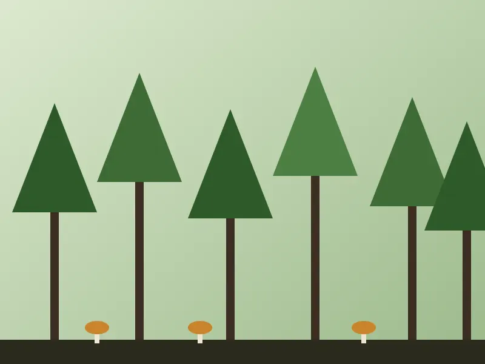
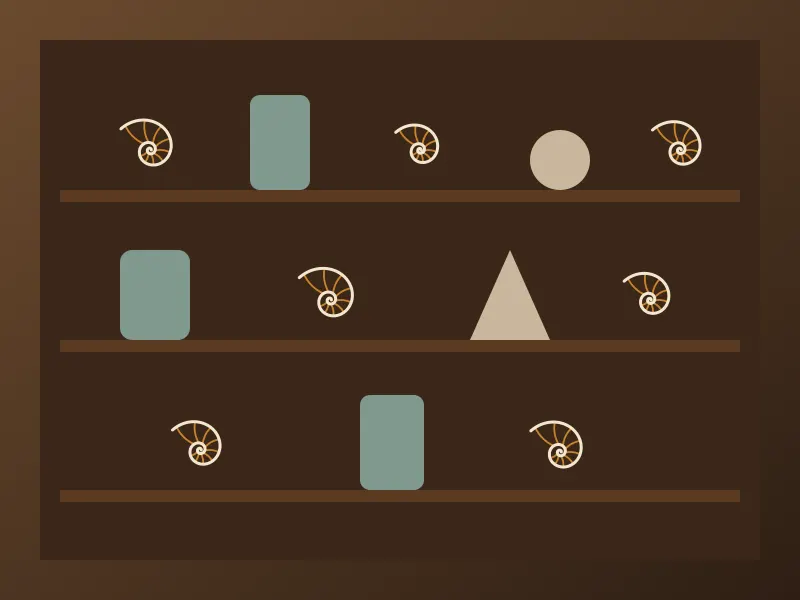

Expositions
Permanentes ou temporaires, elles se visitent toutes avec le même billet.
Expositions permanentes

Sous la verrière de 1903, squelettes et moulages retracent l'histoire des grands reptiles, des premiers pas aux dernières extinctions. Une table tactile permet de manipuler des reproductions de fossiles.

Chênes, champignons, chouettes et coléoptères : une plongée dans les forêts de la région, au fil des saisons. Ambiance sonore enregistrée sur place.

Reconstitution d'un cabinet du XVIIIe siècle : coquillages rares, animaux naturalisés et objets étranges, avec leurs vraies et leurs fausses histoires.
Expositions temporaires

SALLE DES MINERAUX
Deux cents minéraux fluorescents révèlent leurs couleurs cachées sous lumière ultraviolette. Un parcours dans le noir, accessible dès 6 ans.

GALERIE HAUTE
Une exposition à écouter autant qu'à regarder : chants, cris et battements d'ailes des oiseaux de nos rivières, enregistrés au fil d'une année.
Vous venez en groupe ?
Vous venez en groupe ? Les visites guidées se réservent au moins trois semaines à l'avance.